水中的柳A willow in the water
BEGINNING — Learning to Press the Shutter
第一批照片没有构图，也没有主题。
有一只坐在干草里的猫，有夜里从高处看下去的城市灯网，有一个写着「40」的限速牌，一张被电线切开的天空，还有一池被倒过来的柳。
我按拍下来的顺序把它们放在一起——那顺序本身就是我学会看的时间线。
卷末还压着八张不是我拍的照片：影楼寄修时附回来的样片。它们单独成卷，来路写在卷二的标题下面。
The first roll had no composition and no theme. A cat in dry grass. A city seen from above at night. A speed limit sign. A sky cut open by wires. A pool with the willows upside down. I keep them in the order I shot them — that order is the timeline of learning to see. At the end of the roll sit eight frames I did not shoot: samples that came back with the studio's prints. They get a volume of their own, with their origin stated.
第一卷：还没有构图的时候
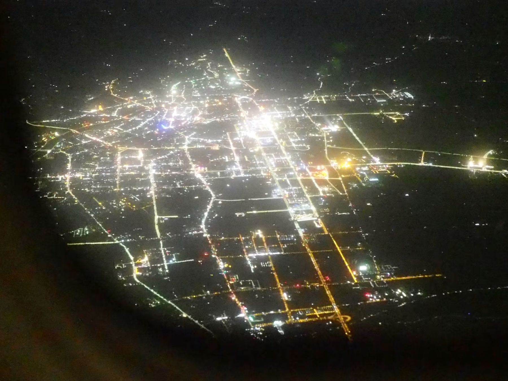
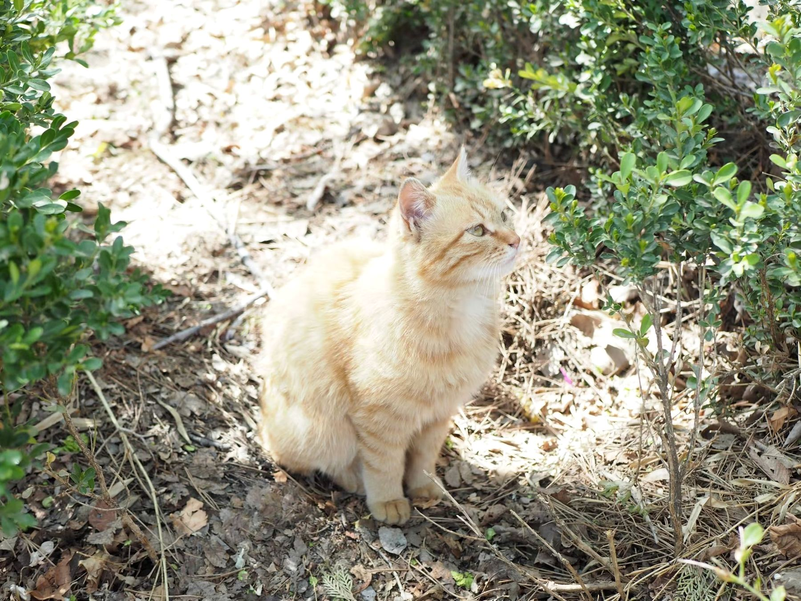


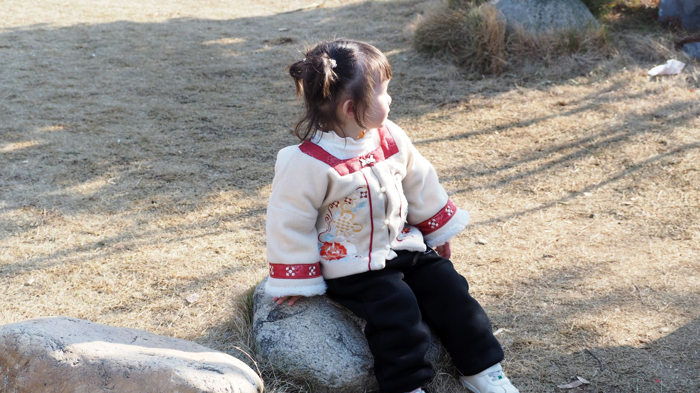
这八张是影楼寄修时附回来的样片，每一张上都烧着「Pe.Daphine vortex 2023」的水印。
它们不是我拍的。留在这一卷里，是因为它们本来就躺在这个文件夹中——与其假装没有，不如把来路写清楚。
These eight frames came back with the studio's prints, every one of them burned with the "Pe.Daphine vortex 2023" watermark. They are not mine. They stay in this roll because they were already in the folder — better to say where they came from than to leave them out.
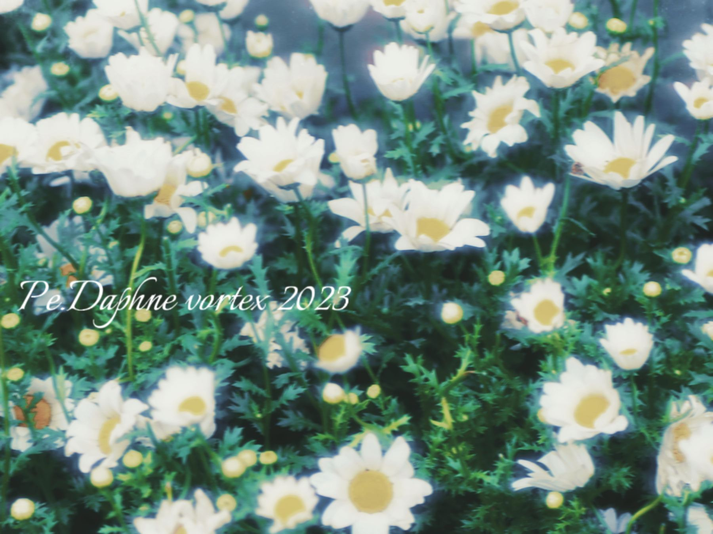
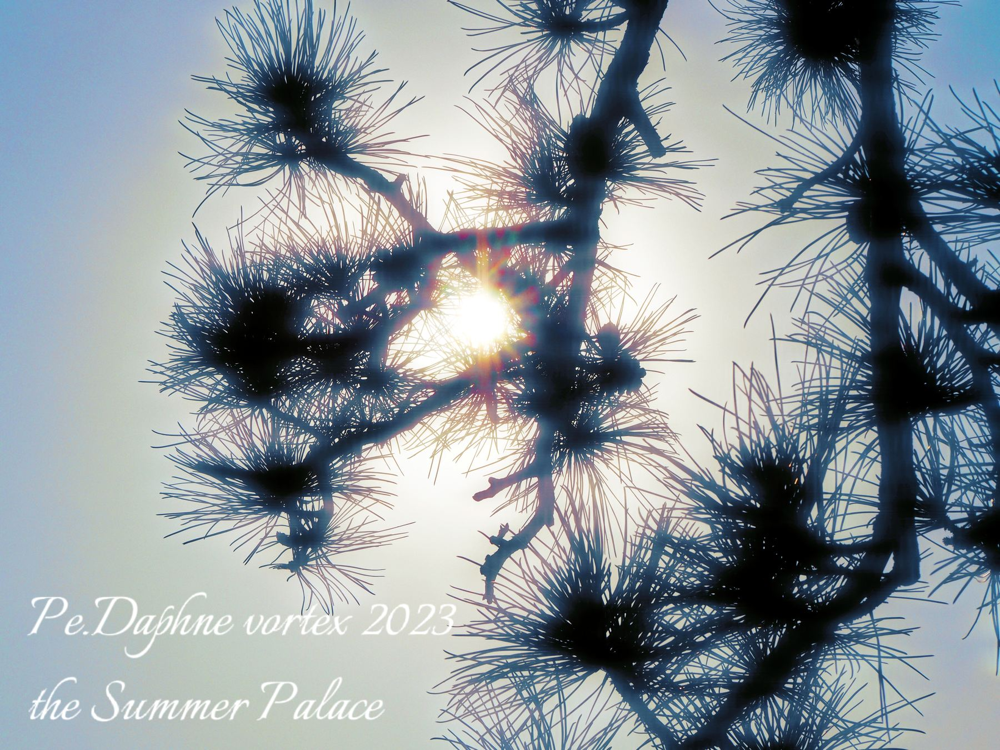
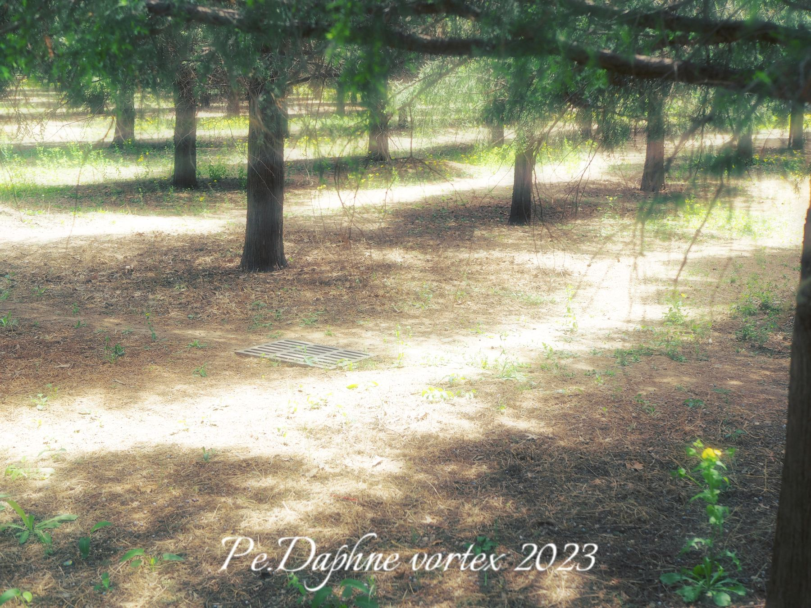
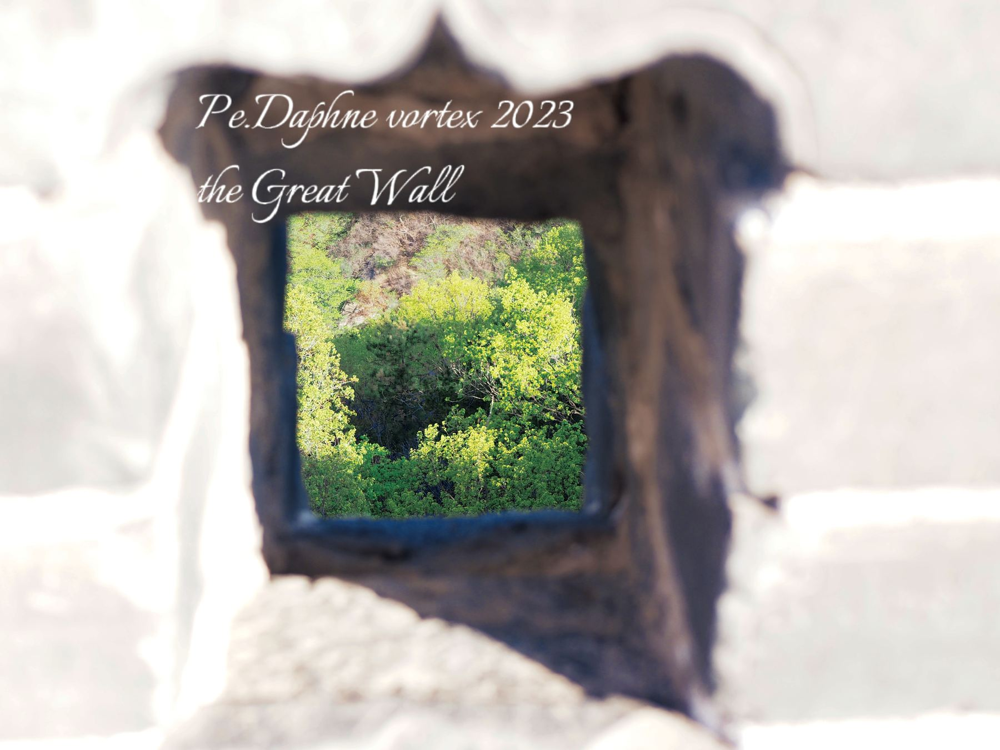
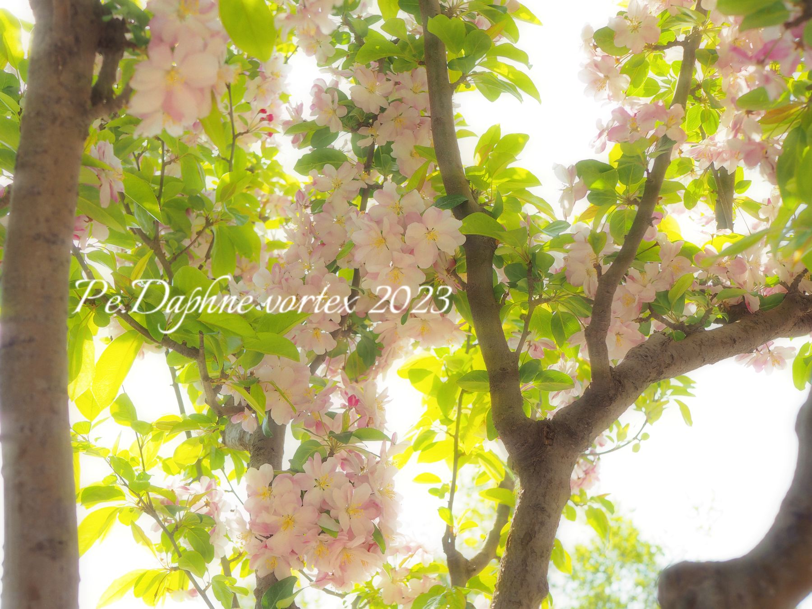
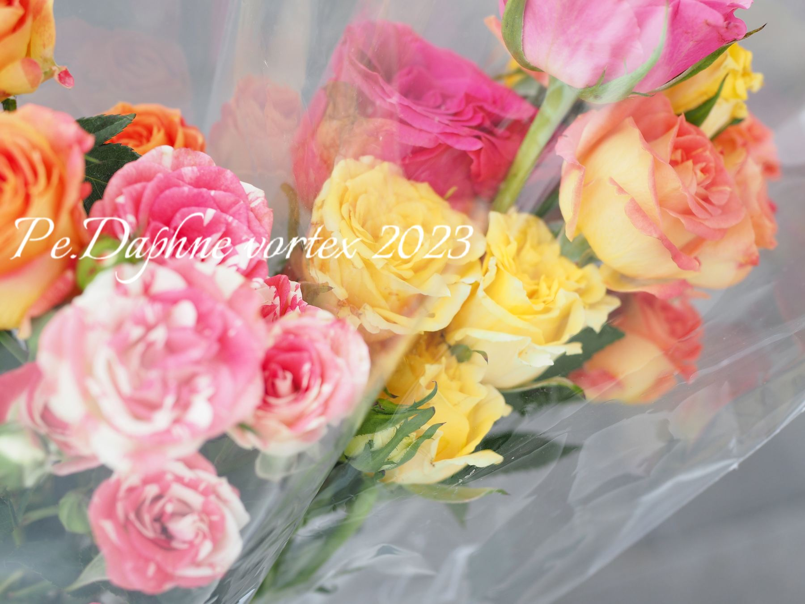
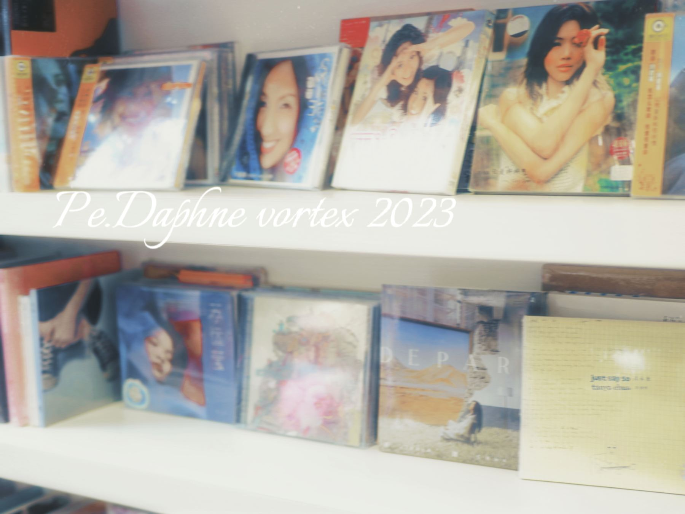
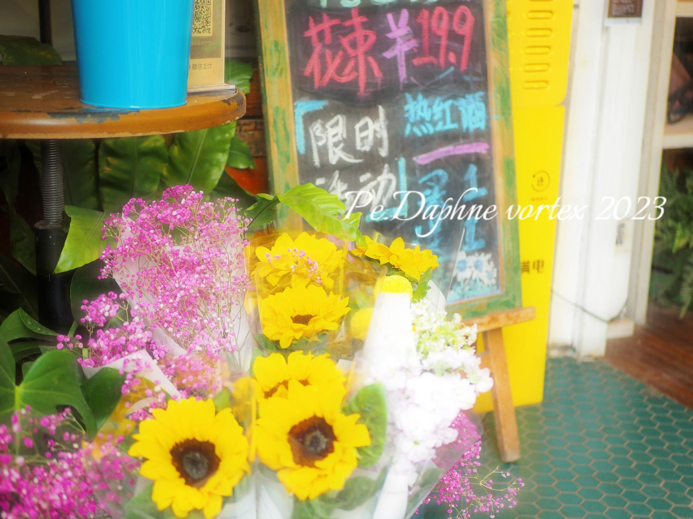
日